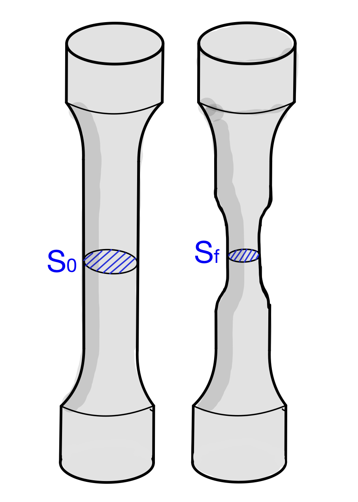

El ensayo de tracción consiste en someter a una probeta normalizada a un esfuerzo de tracción creciente y determinar el alargamiento que sufre hasta que se produce su rotura. Se cuantifica en todo momento la tensión aplicada y la deformación producida.
Este ensayo se realiza con una máquina que cuenta con dos mordazas donde se anclan los extremos de la probeta. Durante el ensayo, la máquina va aplicando una fuerza de tracción cada vez mayor y va generando una gráfica donde se puede ver el alargamiento que sufre la probeta frente al esfuerzo que está soportando. Por lo tanto, los dos parámetros fundamentales en este ensayo son:
Tensión (σ): es el cociente entre la fuerza aplicada sobre la probeta (F) y el área de su sección transversal inicial (S0). Se puede expresar en pascales (1 Pa = 1 N/m2), en kp/cm2 o en kp/mm2.
\[\sigma =\frac{F}{S_{0}}\]
Deformación o alargamiento unitario (ε): es el alargamiento que experimenta la probeta (Δl) respecto a su longitud inicial (l0), debido a la aplicación de la fuerza. Se puede expresar en tanto por uno o tanto por ciento (multiplicándolo por 100).
Se usan la tensión y la deformación unitaria en lugar de la fuerza (carga) y el alargamiento, para que el ensayo no dependa de las dimensiones de la probeta.
Diagrama tensión-deformación
A medida que se realiza el ensayo, la máquina va dibujando una gráfica donde se representan la tensión sufrida por el material (σ) en el eje vertical y la deformación unitaria de la probeta (ε) en el horizontal. Esa gráfica, para la mayoría de materiales, tiene la siguiente forma:
Elaboración propia. Diagrama de tracción genérico(CC BY-SA)
A la vista del diagrama, podemos considerar diferentes zonas:
Zona elástica (OE)
En esta zona el material tiene un comportamiento elástico. Si el esfuerzo cesara, el material recuperaría su forma original. Dentro de esta zona podemos distinguir:
Zona proporcional (OP): en esta zona la gráfica es una línea recta, por lo que las deformaciones son proporcionales a la tensión que las produce. Podemos escribir la ecuación de esa recta sabiendo que pasa por el origen y llamando "E" a la pendiente de la misma, con lo que tendríamos:
\[\sigma =E\cdot \varepsilon\]
Esta fórmula no es más que la Ley de Hooke aplicada a la probeta, que nos dice que la deformación producida es proporcional a la fuerza aplicada.
La pendiente de la recta (E) se denomina módulo elástico o módulo de Young y es característica del material ensayado.
Zona elástica no proporcional (PE): en esta zona el material sigue teniendo comportamiento elástico, pero la gráfica ya no es una línea recta sino que se curva. Por lo tanto, aquí no se puede aplicar ya la ley de Hooke.
El punto final de esta zona está caracterizado por el valor de tensión denominado límite elástico, que se puede nombrar como LE, σE o σy.
Hay que tener en cuenta que los puntos P y E están muy cercanos por lo que, en ocasiones, se consideran el mismo. Si no tenemos información sobre el valor exacto de la tensión en P, podemos considerar que la zona proporcional llega hasta el límite elástico. En ese caso, siempre que la tensión sea inferior a σE, se podrá aplicar la ley de Hooke.
Algunos materiales, como muchas aleaciones de aluminio, no tienen un punto E nítido: la curva se separa de la recta poco a poco. En ese caso se toma como límite elástico convencional la tensión que deja una deformación permanente del 0,2 % (en la norma, Rp0,2): se traza una paralela a la recta de Hooke desde ε = 0,2 % y se corta con la curva. El simulador de más abajo lo hace con el aluminio.
Zona plástica (ES)
En toda esta zona el material tiene un comportamiento plástico, por lo que las deformaciones ya son permanentes. Podemos distinguir:
Zona de deformación plástica uniforme (ER): en esta zona el material sufre cada vez mayores deformaciones al aumentar la tensión, y la sección de la probeta se reduce por igual en toda su longitud. La gráfica alcanza un máximo en el punto R.
La tensión máxima en el punto R es otra propiedad importante obtenida en este ensayo. Se denomina resistencia a la tracción del material y se puede denotar por σR o UTS (Ultimate Tensile Strength).
Aunque aún no se ha producido la fractura completa del material, se considera que ya está roto y no puede soportar más tensión, por eso a σR también se le puede llamar tensión de rotura.
Zona de estricción y rotura (RS): a partir de R, la deformación se concentra en una zona de la probeta, que sufre un fenómeno conocido como estricción: aparece un adelgazamiento en su zona central.

Elaboración propia. Estricción(CC BY-SA)
La gráfica baja a partir de R, pero eso no significa que la tensión en el material baje. Las tensiones siguen aumentando en el material pero, como estamos representando σ, que se calcula dividiendo la carga entre la sección inicial (que es mayor que la sección que tiene ahora la probeta), nos da un valor menor que el realmente sufrido por el material. Digamos que, al tener menos sección, hay menos material y la probeta ofrece menor resistencia a la máquina por lo que la carga disminuye. La estricción (Z) de la probeta que se produce en esta zona puede calcularse de manera relativa como el porcentaje de sección inicial que ha disminuido. En concreto, la fórmula para calcular la estricción es la siguiente:
\[Z =\frac{S_{0}-S_{f}}{S_{0}}\cdot 100\]
Al final de esta zona el material cede completamente y la probeta se rompe en dos trozos. Tras la rotura, se juntan los dos trozos y se mide la longitud final entre las marcas, lf. El alargamiento de rotura (A) es el porcentaje que se ha alargado la probeta respecto a su longitud inicial:
\[A=\frac{l_{f}-l_{0}}{l_{0}}\cdot 100\]
El ensayo completo en 3D: acero, aluminio y fundición
Este simulador reproduce el ensayo en una máquina universal. Elige el material y compáralos: el acero, con su zona de fluencia; una aleación de aluminio, que no tiene escalón y cuyo límite elástico se toma por convenio (Rp0,2), y una fundición gris, que rompe casi sin deformarse. Gira la vista para ver la probeta desde cualquier lado. En la zona elástica, sigue la lupa del extensómetro. En la zona plástica, pulsa «Descargar» para ver qué parte de la deformación se recupera.
Bajo las lecturas tienes el cálculo de σ = F/S0 con los valores de cada instante. En el diagrama puedes pasar a la escala ampliada, que separa los puntos O, P y E como en el diagrama de arriba; activar la tensión real, que divide la fuerza entre la sección del cuello en lugar de entre S0, y dibujar la tensión máxima de trabajo con el coeficiente de seguridad que elijas.
Sugerencia: los botones O–P, P–E, E–R y R–S que hay bajo la máquina (y Fluencia, en el acero) llevan el ensayo directamente a cada zona. Compáralas con lo que has leído en el desplegable de zonas.
Aquí se puede ver un vídeo que resume lo explicado en esta sección y puede ser útil para repasar y afianzar conceptos:
Elaboración propia. Diagrama tensión deformación de un acero(CC BY-SA)
Se observa que aparece una zona de fluencia poco después del límite elástico, en la que el material sufre una gran deformación sin que aumente prácticamente nada la tensión soportada.
En este vídeo se puede ver un ensayo de tracción con una barra de acero:
En este otro vídeo se usa una máquina universal de ensayos estáticos y se muestran detalles interesantes sobre la preparación y el desarrollo del ensayo.
En el simulador del apartado «Diagrama tensión-deformación», elige Acero y verás aparecer la zona de fluencia mientras la probeta se alarga; compárala con el aluminio, que no la tiene.
Tensión máxima de trabajo
La tensión máxima de trabajo (σt) es la máxima que debe soportar una pieza para que el material trabaje en condiciones de máxima seguridad. Está establecida por la normativa y debe asegurar que:
El material no debe sufrir deformaciones plásticas.
El material debe trabajar en la zona elástica de proporcionalidad, cumpliendo la ley de Hooke.
Se debe contar con un margen de seguridad, por posible aparición de fuerzas imprevistas.
En los materiales dúctiles, como el acero o el aluminio, se calcula a partir del límite elástico, dividiéndolo entre un coeficiente de seguridad (CS) mayor que 1:
\[\sigma _{t}=\frac{\sigma _{E}}{C_{S}}\]
En los materiales frágiles, como la fundición, que no tienen un límite elástico definido, se parte de la tensión de rotura:
\[\sigma _{t}=\frac{\sigma _{R}}{C_{S}}\]
El coeficiente de seguridad es un número que establecerá la normativa y que dependerá tanto del material como del uso al que esté destinada la pieza.
En el simulador del ensayo de tracción puedes dibujar la tensión máxima de trabajo sobre el diagrama y ver cómo cambia al variar el coeficiente de seguridad.
Ejercicios de ensayos de tracción
Ejercicios de ensayos de tracción
La colección completa (57 problemas, con el resultado de cada uno para que puedas
autocorregirte) está en el anexo de colecciones de problemas.